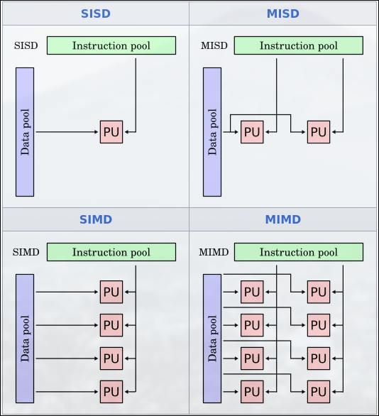
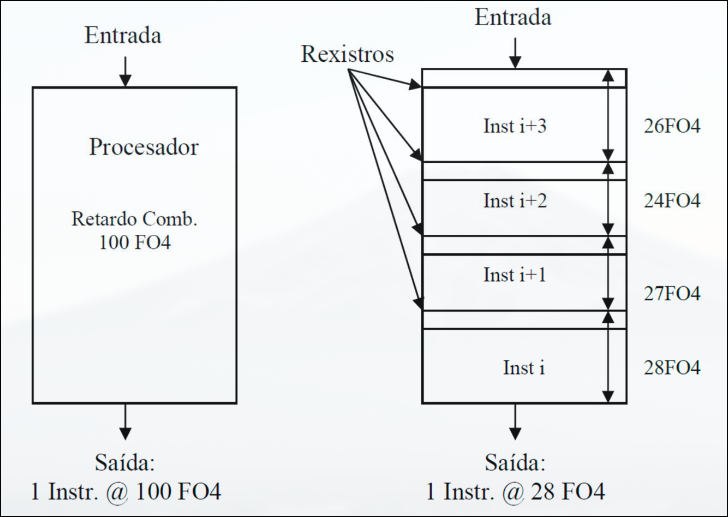
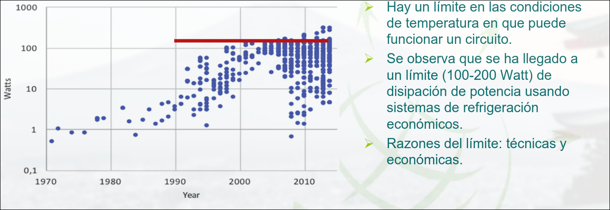
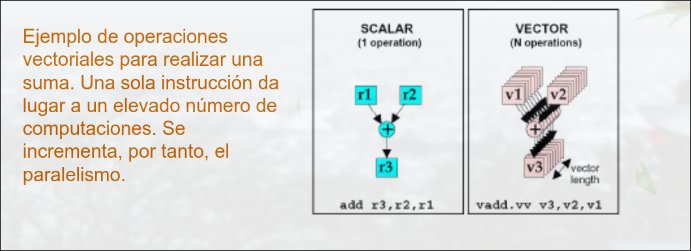
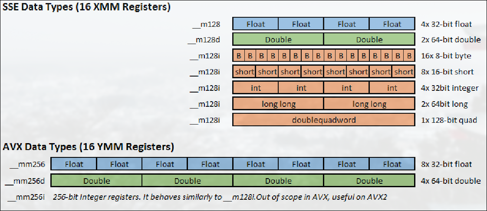
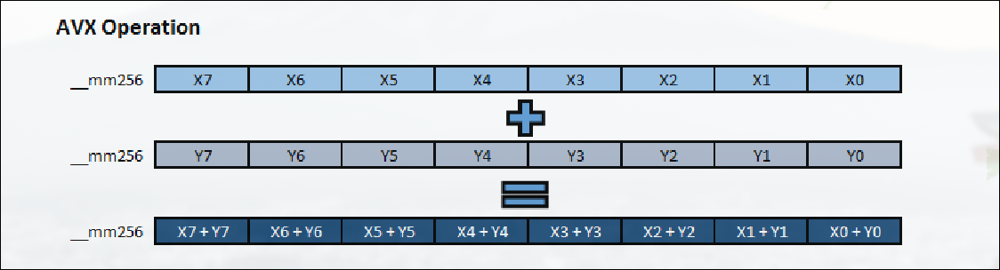

Sistemas Multinúcleo
1.1 Introducción a la Arquitectura de Computadores y Procesadores Multinúcleo
La arquitectura de computadores es el área de la informática que estudia el diseño y la organización de los procesadores, la memoria y los sistemas de interconexión para optimizar el rendimiento de los sistemas de cómputo.
Dado el crecimiento de la demanda de procesamiento y las limitaciones físicas del modelo tradicional basado en el aumento de frecuencia, los procesadores actuales han evolucionado hacia arquitecturas multinúcleo que explotan el paralelismo.
1.2 Concepto y Tipos de Paralelismo
La explotación del paralelismo está relacionada con la mejora de rendimiento del sistema. Para poder explotar el paralelismo es necesario modificar las aplicaciones: el código debe exponer el paralelismo de manera explícita.
Paralelismo en arquitecturas:
-
Instruction-Level Parallelism (ILP): se ejecutan a la vez varias instrucciones en distintas fases. Se dice que está agotado, a nivel tecnológico ya que no hay muchas mejoras posibles y se deben buscar otros métodos para mejorar el rendimiento.
-
Thread-Level Parallelism (TLP): Múltiples hilos ejecutados en paralelo en distintos núcleos.
-
Request-Level Parallelism (RLP): Procesamiento de múltiples solicitudes en paralelo.
-
Vector Architectures / GPUs (SIMD): Se aplican instrucciones a multiples datos en paralelo. Para ello agrupan las variables en vectores, realizando muchos cálculos en pocas instrucciones.
1.3 Clasificación de Arquitecturas Paralelas
Existen diferentes criterios que permiten clasificar arquitecturas paralelas: taxonomía de Flynn, según las organización del sistema de memoria, según la escalabilidad, disponibilidad de sus comonentes, cociente rendimiento/coste, etc.
Es una clasificación de los procesadores basada en el número de flujos de instrucciones y datos que manejan simultáneamente.
- SISD: computador secuencial que puede explotar el paralelismo a nivel de instrucción
- SIMD: arquitecturas vectoriales, GPUs o extensiones multimedia
- MISD: no hay implementaciones comerciales
- MIMD: cada procesador tiene sus propias instrucciones y opera sobre sus propios datos.
| Categoría | Flujo de Instrucciones | Flujo de Datos | Descripción |
|---|---|---|---|
| SISD (Single Instruction, Single Data) | 1 | 1 | Computación secuencial tradicional (Ej: procesadores mononúcleo antiguos). |
| SIMD (Single Instruction, Multiple Data) | 1 | Múltiples | Ideal para procesamiento de gráficos y cálculos vectoriales (Ej: GPUs). |
| MISD (Multiple Instruction, Single Data) | Múltiples | 1 | Poco común, usado en sistemas tolerantes a fallos. |
| MIMD (Multiple Instruction, Multiple Data) | Múltiples | Múltiples | Base de los procesadores multinúcleo modernos. |
 |
1.4 Conceptos de Procesadores Multinúcleo
1.4.1 Segmentación (pipeline)
La segmentación es la ejecución de instrucciones en etapas, de manera que cada etapa tiene un retardo adicional (para almacenar los resultados de la etapa en registros).
La profundidad de segmentación es el número de etapas de segmentación.
Nota
Un nodo tecnológico se refiere al tamaño mínimo de los transistores y las interconexiones en un proceso de fabricación. Este tamaño se mide en nanómetros (nm) y define la generación de un microprocesador.
El retardo de cada instrucción en un procesador con segmentación es más alto que sin ella debido a la lógica adicional añadida, pero pasa menos tiempo entre instrucciones.
En cada ciclo de reloj se emite una instrucción para ser ejecutada, pero alguna puede quedarse bloqueada en alguna etapa (por ejemplo, para buscar un dato en memoria), provocando que las instrucciones posteriores no puedan avanzar, lo cual se conoce como la burbuja (parada de emisión), lo que reduce la productividad.
Con segmentación se usa una frecuencia de reloj más alta pues el periodo será de la longitud aproximada de una etapa (se intenta que todas tarden aproximadamente lo mismo).

1.4.2 Tecnologías de Fabricación CMOS
Los chips tienen varias capas de transistores apiladas para ahorrar superficie. El valor numérico que identifica al nodo tecnológico es el ancho mínimo de una conexión de cobre de nivel 1, que esta relacionado directamente con la superficie que ocupa el transistor.
La ley de Moore predice que la unidad de transistores por unidad de área se duplica cada 2 años aproximadamente. Cada nodo tecnológico supone una reducción del 0.7x de las conexiones entre transistores y del 0.5x del aŕea de un chip.
En el caso ideal, esto supondría que el procesador tiene el doble de superficie disponible, pero en realidad no todas sus partes escalan igual (especialmente, la memoria DRAM escala mal).
Al principio el área ocupada por la misma cantidad de transistores se reducía a la mitad entre nodos tecnológicos, pero cada vez se reduce menos (en torno al 0.4x).
1.4.3 Potencia
Potencia Dinámica
La potencia dinámica es la energía consumida cuando los transistores cambian de estado (de 0 a 1 o de 1 a 0). Esto ocurre cada vez que el procesador ejecuta instrucciones.
- C = Carga capacitiva
- V = Voltaje de alimentación
- f = Frecuencia de reloj
La carga capacitiva depende del número de transistores activos y de la tecnología (que determina la capacitancia de cables y transistores). En CMOS escala ineficientemente, 0.8x de una generación a otra (mientras que transistores x2)
A mayor frecuencia, más conmutaciones por segundo → mayor consumo energético.
La potencia es proporcional al cuadrado del voltaje, lo que significa que reducir V ayuda significativamente a disminuir el consumo energético.
Potencia Estática (o de fuga)
La potencia estática es la energía consumida incluso cuando el procesador está inactivo. Se debe a corrientes de fuga que atraviesan los transistores aunque no estén cambiando de estado.
Donde:
= Corriente de fuga = Voltaje de alimentación
Para reducirla:
- Power gating: desconectar las partes que no se estén usando.
- Diseños domain-specific -> diseños optimizados para una operación muy frecuente.
- Escala con el número de transistores, aunque estén sin funcionar. Si se usan cachés SRAM grandes, puede llegar al 50%
Thermal Desing Power (TDP)
El TDP caracteriza el consumo de potencia sostenido. Se usa como objetivo en cuanto a potencia suministrada y sistema de refrigeración. Su valor está entre la potencia pico y la media
La frecuencia de reloj se puede reducir dinámicamente, es decir, tomar valores distintos en distintas partes del sistema, para limitar el consumo de energía.
Hay un límite en las condiciones de temperatura en las que puede funcionar un circuito. Se ha llegado a un límite de disipación de potencia (100-200W) debido a cuestiones técnicas y económicas. Mantener el límite en cada nueva generación de microprocesadores requiere optimizar el consumo de potencia.

Técnicas para Aumentar la Eficiencia Energética
-
No hacer nada: Cuando una unidad no está en uso, se detiene su reloj para evitar consumo innecesario de energía estática o dinámica.
-
Escalado Dinámico de Voltaje-Frecuencia (DVFS): Cuando el procesador está inactivo, reduce su frecuencia y voltaje para ahorrar energía.
-
Estados de baja potencia en memorias DRAM y discos almacenamiento: tratando de que las partes inactivas funcionen con frecuencia menor.
-
Overclocking: trabajar a frecuencia más alta durante breves periodos de tiempo.
- Puede implicar apagar los núcleos para los que no se sube la frecuencia
- Limitado por la subida de la temperatura
- Transparente a la usuario
1.4.4 Ancho de Banda y Latencia
Tiempo de Respuesta, latencia o tiempo real: tiempo entre el inicio y final de una tarea. Incluye todos los sobrecostes del sistema (E/S, acceso a memoria RAM, etc). Ancho de Banda: mide la transferencia de información por unidad de tiempo El ancho de banda máximo sostenido (BWM) se diseña para satisfacer cargas de trabajo representativas para el procesador.
Donde:
- N = Número de núcleos.
- F = Frecuencia del procesador.
- IP = Intensidad operacional (instrucciones/byte).
- CPI = Ciclos por instrucción.
En la práctica, el
1.5 Métricas de Rendimiento de un Sistema
Se basan en la medida de tiempos de ejecución:
-
Tiempo de CPU: tiempo de computación en CPU para una tarea concreta.
-
Speedup: aceleración de una version X relativa a una versión Y para un programa en particular
-
CPI (Ciclos por Instrucción): número medio de ciclos que una instrucción necesita para ejecutarse. Diferentes instrucciones pueden requerir distinto número de ciclos.
pero por diversas causas que se estudiaran en el tema 2 se pueden producir retrasos que lo varíen creando un cierto overhead.
El
-
MIPS (Millones de Instrucciones por Segundo)
-
GFLOPS (GigaFLOPS)
El gran problema del MIPS Y del GFLOPS es que no son una buena medida de rendimiento, porque que ejecutes muchas operaciones por segundo, no implica que programa vaya a tardar menos en ejecutarse que en otro con un MIPS menor.
- LEY DE AMDAHL: La posible mejroa de rendimiento está limitada por la proporción en que se use la prestación mejorada.
A un código que se ejecutaba en t se le aplica una mejora a un porcentaje de su ejecución F, que lo reduce en un factor M.
1.6 BenchMarks
Para evaluar el rendimiento de un sistema se puede usar un conjunto específico de programas de prueba conocidos como BENCHMARKS.
- La práctica estándar es usar conjuntos de programas de aplicación real.
- Los programas de prueba forman una carga con la que el usuario espera predecir el rendimiento de la carga real del sistema.
Para indicar las medidas se debe hacer un informe de forma que otra persona pueda reproducir los resultados (versión del SO, compilador, entradas, ...). El rendimiento de la máquina medido con un benchmark se suele dar como un único número.
El grupo de programas de prueba más popular y completo es el SPEC (Standard Performance Evaluation Corporation).
- Se usan para medir tiempo de CPU y productividad.
- Los 43 programas que se incluyen en la última versión de SPEC para procesador se agrupan en:
- Carga computacional intensa en punto flotante (SPECfp2017).
- Carga computacional intensa en enteros (SPECint2017).
- El procesador, la memoria y la E/S del sistema influyen en el valor medido, junto con el programa utilizado.
- Los tiempos de ejecución del sistema deben ser normalizados, para lo que se usa otro sistema como referencia (normalmente uno muy antiguo):
- Ratio SPEC para un programa →
- El test se repite para todos los programas del conjunto SPEC y se computa la media geométrica de los resultados:
Ratio SPEC para un conjunto de
programas (es hacer una media geométrica de los SPECs)
- Ratio SPEC para un programa →
1.7 Paralelismo de Datos
Existen aplicaciones estructuradas en tareas simples denominadas Kernels (conjuntos de instrucciones) que operan sobre muchos datos, con potencial de ejecución paralela:
- Por ejemplo, aplicaciones gráficas, multimedia y de realidad virtual
- En ellas es fácil disponer de hilos que puedan operar en paralelo, lo difícil es proporcionar datos a la velocidad necesaria.
Esto se logra con procesadores vectoriales.

Otra posible solución es incluir en los núcleos de propósito general la posibilidad de procesamiento vectorial. Actualmente se pueden realizar operaciones en paralelo sobre vectores de 256 bits (es decir 8 operandos en float o 4 en double).

Las instrucciones vectoriales aumenta la complejidad de la programación. El aumento en velocidad suele compensar. Para tamaños de problema grandes se puede llegar a ganar hasta 8x en tiempo de ejecución si se usan operaciones AVX.

Microprocesadores Basados en Streaming
Los microprocesadores basados en streaming extienden el concepto del procesador vectorial (son usados en las tarjetas gráficas de Nvidia). En lugar de organizar la información en vectores, usan streams, que son vectores de estructuras. En lugar de instrucciones vectoriales simples, usan kernels, que actúan sobre cada uno de los elementos del stream.
EL modelo de programación basado en streams ofrece más oportunidades de paralelismo que el de programación paralela.
La programación para estas unidades, (se suele realizar CUDA o OpenCL) es en general más compleja que en entornos habituales de programa. Ahora se están implementando los Tensor Cores especializados en operaciones con matrices.